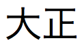

You can enter Japanese Emperor Year (Wareki) dates in date fields. FileMaker Pro Advanced changes the Emperor Year to a Western Gregorian (Seireki) year and saves it internally in the format specified by the file. The display format of the date—Western or Japanese—depends on the date field format.
To enter Japanese Emperor Year dates, precede the date with the era abbreviation (shown below). Use the format letterY/M/D, where letter designates the era, followed by the year, month, and day.
For example, M1/12/30 is changed to 1868/12/30 (M1 = the 1st year of Meiji, or 1868). Similarly, T1/12/30 becomes 1912/12/30, S1/12/30 becomes 1926/12/30, and H1/12/30 becomes 1989/12/30
Era letter | Era name | Era formats | Reign |
| CE (Common Era) | , , CE | prior to 1868/09/08 |
m, M | Meiji | , , M | 1868/09/08 - 1912/07/29 (M1 - M45) |
t, T |  Taisho | , , T | 1912/07/30 - 1926/12/24 (T1 - T15) |
s, S | Showa | , , S | 1926/12/25 - 1989/01/07 (S1 - S64) |
h, H | Heisei | , , H | 1989/01/08 - (H1 - ) |
FileMaker Pro Advanced interprets the year according to the following table. For example, h2/1/2 is changed to and saved internally as 1990/01/02 (second year of Heisei, January 2).
Year input | Seireki (Western) year | Wareki era name and era year |
0 | 1988 | S63 |
1 | 1989 | S64 to Jan. 7, H1 from Jan. 8 |
2 to 25 | 1990 to 2013 | H2 to H25 |
26 to 63 | 1951 to 1988 | S26 to S63 |
64 | 1989 | S64 to Jan. 7, H1 from Jan. 8 |
65 to 99 | 1965 to 1999 | S40 to S64 (1965 to 1989), H1 to H11 (1989 to 1999) |
100 to 999 (3-digit year) | 0100 to 0999 | CE 100 - 999 |
0001 to 4000 (4-digit year) | 0001 to 4000 | CE 1 to CE 1868 (0001 to 1868) |
•You can enter era letters in lowercase or uppercase, and as full-width or half-width characters. Full-width numbers (but not the date separators) are changed to half width when you exit the field in Browse or Find modes.
•You can use any supported date separator.
•An era abbreviation letter followed by 0 (zero) is interpreted as the year prior to the first year of that era. For example, M0 = 1867, T0 = 1911, and so on.
•If you enter a 1- or 2-digit year without the preceding era letter, FileMaker Pro Advanced produces a 4-digit year based on the Gregorian calendar. For example, a date entered as 30+1+20 is interpreted as 2030/1/20, instead of 2018/1/20. To produce the date 2018/1/20, enter h30+1+20 (or H30+1+20).